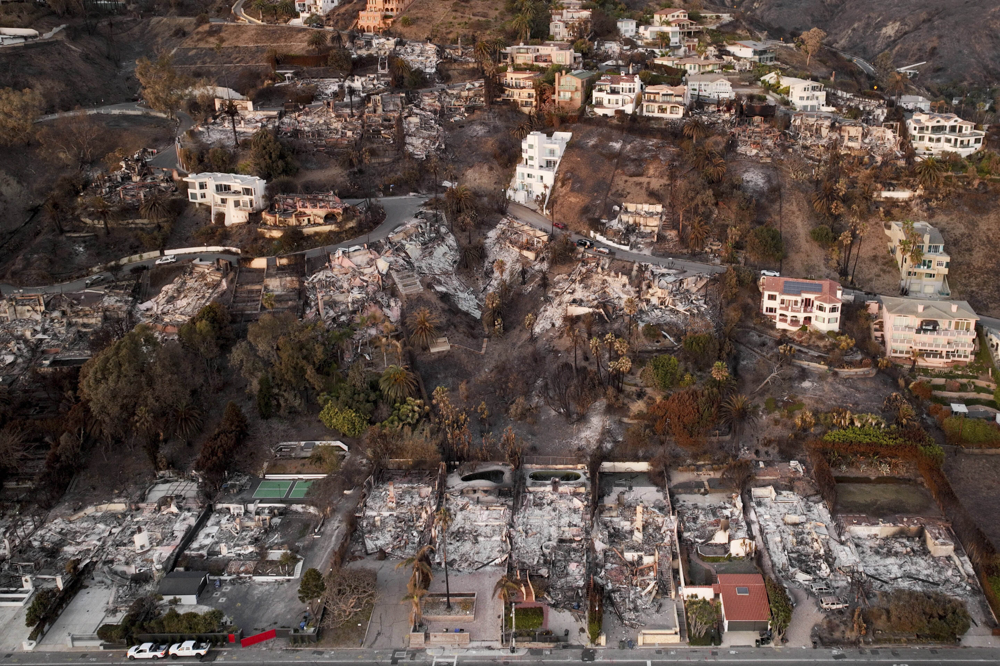
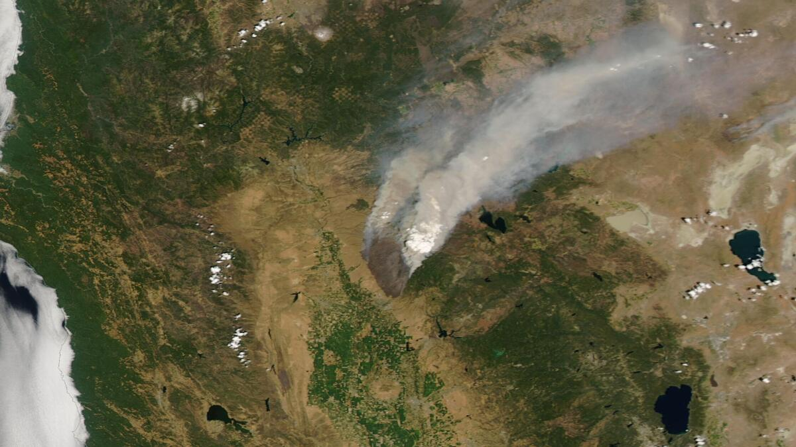
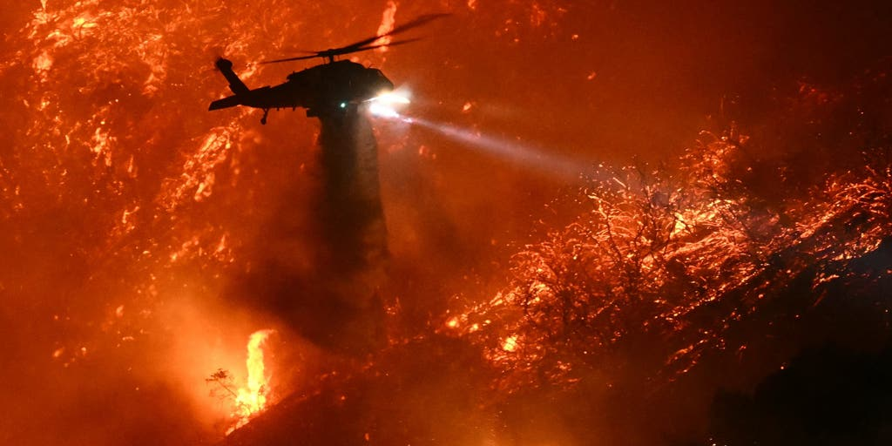

Rhetorical Infrastructure,
API Access, and Disaster
Communication in the
Social Media Age
How do platform architectures, API restrictions, and algorithmic logics shape what disaster relief organizations can say, and what researchers can see, during a crisis?
What This Project Is About
This project offers a historically situated and methodologically self-aware examination of how the formal features of social media platforms shape the crisis communication practices of disaster relief organizations. Focusing on FEMA and the American Red Cross (ARC), I analyze posts on X (formerly Twitter) and Instagram across major California wildfire events between 2020 and 2025.
Two interrelated forces defined this period. The COVID-19 pandemic transformed how the public inhabits, uses, and understands social media. And major platform shifts (including Twitter's restructuring into X, significant restrictions on API access, and Instagram's algorithmic reorientation) dramatically altered the conditions under which institutional crisis communication occurs and under which researchers can study it.
This project substantially expands on my prior textual analysis of 79 X posts, building a curated corpus of approximately 240 posts drawn from both X and Instagram, distributed across four distinct wildfire seasons.
Historical Specificity
The 2020–2025 period is not a generic "social media era." COVID temporality, the Twitter-to-X transition, and API closure produced a historically distinct media environment.
Post-API Methodology
The APIcalypse is not a technical inconvenience — it is a form of platform power. This project treats manual curation as a principled and theoretically rigorous methodological response.
Rhetorical Analysis
Close reading of how FEMA and ARC construct authority, empathy, and urgency — and how platform form enables or forecloses certain rhetorical possibilities.
Cross-Platform Comparison
Comparing X and Instagram reveals how platform affordances, including algorithmic feeds, hashtag visibility, and image-first design, produce distinct rhetorical environments for the same organizations.
Corpus Breakdown: 240 Posts
Major Thinkers & Conversations
Click any thinker below to explore how their work informs this project.
Digital Studies
- Drucker (2011, 2020)
- McPherson (2018)
- Hu (2015)
Infrastructure Studies
- Starosielski (2015)
- Bucher (2018)
- Kennedy (2016)
Post-API Methods
- Bruns (2019)
- Freelon (2018)
- Perriam et al. (2020)
- Walsh (2023)
- Lomborg & Bechmann (2014)
- Weller (2015)
Crisis Communication
- Jin, Liu & Austin (2014)
- Austin et al. (2017)
- Kent & Taylor (2002)
- Taylor & Kent (2014)
- Coombs (2022)
- Zappavigna (2012)
Communications Infrastructures Accrete
Situating the 2020–2025 dataset within two longer temporal arcs: the layered history of disaster communication media, and the compressed arc of social media's open-to-closed transformation. Following Starosielski (2015): infrastructures do not replace one another — they accrete. Click any era to explore its significance for this project.
What the Data Reveals
Rhetorical analysis of 240 curated posts across FEMA and the American Red Cross, compared by organization, platform, and wildfire season.
Rhetorical Appeals by Organization
FEMA relies heavily on logos (procedural, fact-based) while ARC favors pathos-centered, narrative communication.
Post Format Distribution
Format choices signal institutional identity: ARC uses visuals and video to humanize; FEMA relies on infographics and text.
Posting Frequency by Wildfire Season
Post volume across both organizations tracks escalation events — the 2025 LA fires produced the highest sustained communication activity.
Dialogic Features
ARC posts score higher on dialogic principles — empathy, interactivity acknowledgment, invitation to respond — than FEMA posts.
Key Analytical Findings
Platform Form Shapes Rhetoric
Instagram's image-first interface consistently elicits more emotionally resonant posts from both organizations, while X's retweet culture incentivizes informational brevity and procedural updates.
COVID Temporality Complicates Crisis
Posts from 2020–2021 reflect a layered crisis environment in which wildfire urgency competed with pandemic fatigue. Both organizations adjusted tone and frequency in ways not visible in pre-2020 data.
The APIcalypse as Rhetorical Fact
The closure of Twitter's free API tier in 2023 constitutes not merely a methodological challenge but a form of platform power that makes certain forms of institutional communication harder to study and therefore easier to naturalize.
Institutional Identity Persists Across Platforms
Despite platform differences, FEMA's logos-driven procedural ethos and ARC's pathos-centered narrative voice remain recognizable across X and Instagram, suggesting that organizational rhetorical identity is more durable than platform logic.
Browse the Dataset
All 79 X posts from the original analysis dataset. Click any post to view the full content, rhetorical coding, and direct link to the original.
The Crisis Behind the Data
California's 2020–2025 wildfire seasons produced some of the most devastating disasters in state history, reshaping how communities and institutions communicate during emergencies.

Aerial view of destruction across the Los Angeles region during the January 2025 fires, which burned through the largest urban area scorched in California in at least 40 years.

Satellite imagery captures the scale of California wildfires, providing context for the surge in crisis communication volume during peak fire seasons.

FEMA and ARC coordinate communication around firefighting operations, producing distinct rhetorical strategies for public and institutional audiences.
Five Years of Crisis & Platform Change
The 2020–2025 period was not a stable media environment. Click any event to learn more about its significance for this project.
Andrew Donkor
I am a PhD student and instructor in the Department of Communication at the University of Maryland, College Park, where I specialize in public relations, strategic communication, and digital rhetoric.
My research sits at the intersection of crisis communication, political communication, and digital humanities. I study how institutional actors such as government agencies, humanitarian organizations, and advocacy groups use social media and other digital tools to construct authority, foster empathy, build public trust, and mobilize support for affected communities during local and global crises. I also examine how they structure and frame their messaging to sustain engagement and invite meaningful public participation during disasters and emergencies.
This project extends my ongoing study of FEMA and the American Red Cross's wildfire communication, bringing digital studies and infrastructure theory into conversation with crisis communication scholarship to ask what we can and cannot know about institutional rhetoric in a post-API research environment.
Sources & Annotations
All 19 sources in APA 7th edition with verified DOIs. Click any entry to expand the annotation.